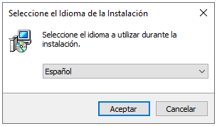
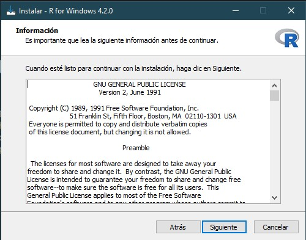
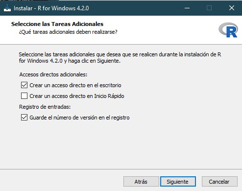
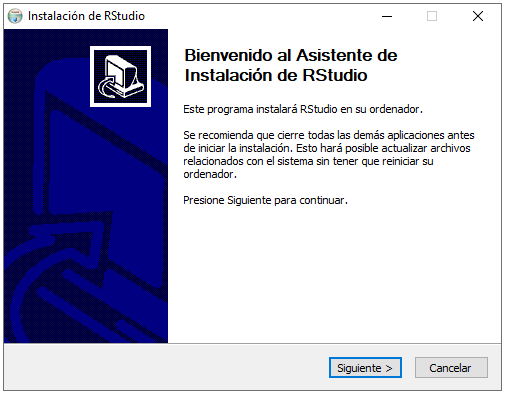
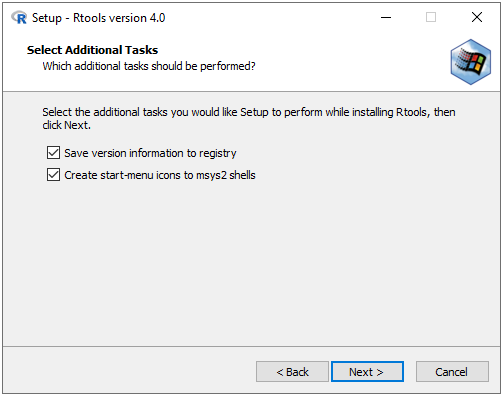

Guía de Instalación
1. Instalando R
Antes de instalar R(v4.2.0), debemos ir al sitio web de CRAN para descargar el programa dando click en “Download R 4.2.0 for Windows”.
Una vez descargado el programa, el primer paso es escoger el idioma del asistente de instalación de R.

Escogido el idioma, para el segundo paso simplemente debemos dar click en “siguiente”.

En la siguiente ventana, el tercer paso consiste en elegir en qué carpeta se instalará R y sus dependencias. Si tenemos permisos de administrador en nuestro dispositivo, podemos dejar que R se instale en la carpeta por defecto (“program files”); sin embargo, si esto no es así (por ejemplo, si no es nuestro dispositivo o compartimos su uso mediante distintos usuarios), lo más recomendable es elegir otra ubicación, por ejemplo “documentos”. Esto nos evitará problemas de accesos o permisos durante nuestra práctica diaria con R.
A continuación, el cuarto paso consiste simplemente en dar click en “siguiente”.

En el quinto paso, nos preguntará si deseamos utilizar las opciones de configuración, recomendamos marcar “sí”.

Luego, para el sexto paso seleccionamos MDI y damos click en “siguiente”.

En el séptimo paso elegimos ayuda HTML y damos click en “siguiente”.

Como octavo paso, en las siguientes dos ventanas daremos click en “siguiente”, lo cual iniciará la instalación de R en nuestro dispositivo y, una vez termine, concluimos dando click en “finalizar”.



2. Instalando RStudio
Al igual que en la sección anterior, para instalar la versión 2022.02.3+492. de nuestro IDE, primero vamos a la página oficial de Rstudio, escogemos la opción “Free” y damos click en “download RStudio for Windows”.
Una vez descargado el programa, iniciamos el asistente de instalación dando click en “Siguiente”.

En la siguiente ventana nos preguntarán en qué carpeta deseamos instalar nuestro RStudio. Aquí es importante tener las mismas consideraciones que mencionamos en la primera sección: Si no tenemos acceso de administrador, es mejor escoger “Documentos”, de lo contrario, simplemente damos click en “siguiente” en esta ventana e “instalar” en la siguiente.


Terminado el proceso de instalación, cerramos el asistente dando click en “Terminar”.

3. Instalando Rtools
Por último, vamos a descargar Rtools 4.2 dando click en Rtools42 installer.

Una vez descargado, iniciamos el asistente de instalación dando click en “next” en las siguientes dos ventanas.

A continuación, iniciamos la instalación dando click en “install” y esperamos a que el proceso se complete. Finalmente, cerramos el asistente dando click en “finish”.


Si hemos realizado el proceso correctamente, podremos abrir nuestro RStudio y llegar a esta pantalla:

Si desea más información sobre cómo instalar estos programas en Windows y/o MAC, visite la página oficial del proyecto R.
4. Recursos adicionales
Videos de youtube recomendados:
Video de henryholder01
Video de Renzo Caceres Rossi
Video de Roger Miranda
Video de R Epidemics Consortium (RECON)
Manuales disponibles en la web:
- Manual de Alessio Bocco
- Manual de Giorgio Boccardo y Felipe Ruiz
- Manual del libro Hands-On Programming with R
- Manual de Antoine Soetewey
Adaptado de manual elaborado para curso R para Ciencia de Datos en Salud dictado por InkaStats Data Science Solutions en 2022 Autor: Anthony Romero-Cerdán